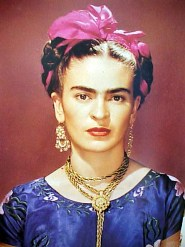

FRIDA KAHLO
YAŞAMI
1907 yılında Mexico City’nin güneyindeki Coyoacan’da, Macar Yahudisi fotoğrafçı Wilhelm Kahlo ve
Kızılderili asıllı Matilde Calderon Gonzales’in dört kızından üçüncüsü olarak dünyaya geldi. 6
Temmuz 1907 günü doğmuş olmasına rağmen, kendisi doğum tarihini, Meksika devrimi'nin gerçekleştiği 7
Temmuz 1910 günü olarak ilan etmiş, yaşamının modern Meksika'nın doğuşuyla başlamış olmasını
istemiştir.
Altı yaşındayken geçirdiği çocuk felcinin sonucu olarak bir bacağı özürlü kalmış, kendisine "Tahta
Bacak Frida" denmişti. Bu özrüyle başetmesini bilen Frida, gençkızlık çağında, dönemin en iyi
eğitimini veren Ulusal Hazırlık Okulu’nda okudu. Bu okul, onu sanat, edebiyat, felsefe gibi alanlara
yönlendirdi. İlerde Meksika düşün yaşamının önemli isimleri olarak anılacak Alejandro Gomez Arias,
Jose Gomez Robleda, Alfonso Villa okul arkadaşları oldu. Okulda, anarşist bir edebiyat grubuna dahil
oldu; güçlü bir kişilik oluşturmaya başladı. 19 yaşında geçirdiği bir trafik kazası bütün hayatını
değiştirdi.
OTOBÜS KAZASI
17 Eylül 1925 okuldan eve dönerken bindiği otobüsün tramvayla çarpışması sonucu çok kişinin öldüğü
kazada, trenin demir çubuklarından birisi Frida’nın sol kalçasından girip leğen kemiğinden çıkmıştı.
Kazadan sonra tüm hayatı korseler, hastaneler ve doktorlar arasında geçecek; omurgası ve sağ
bacağında dinmeyen bir acıyla yaşayacak, 32 kez ameliyat edilecek ve çocuk felci nedeniyle sakat
olan sağ bacağı 1954’te kangren yüzünden kesilecektir.
Kazadan bir ay sonra hastaneden çıkan Kahlo, ailesinin teşviki ile sıkıntı ve acıdan kaçmak için
resim yapmaya başladı. Yatağının tavanındaki aynaya bakarak oto-portreler yaptı. İlk otoportresi,
"Kadife Elbiseli Otoportre"'dir (1926)
1927 yılı sonunda yürümeye başlayan Kahlo, bu dönemde sanat ve politika çevreleri ile yakınlaşmaya
başladı. Kübalı önder Julio Antonio Mella ve fotoğraf sanatçısı Tina Modotti ile tanışıp yakın
arkadaş oldu. Birlikte, dönemin sanatçılarının davetlerine, sosyalistlerin tartışmalarına katılmaya
başladılar. Kahlo, 1929’da Meksika Komünist Partisi’ne üye oldu.
EVLİLİĞİ
Frida Kahlo (ortada) ve Diego Rivera, 1932, Carl Van Vechten tarafından çekilmiş.
Resim çizmeye devam eden Kahlo aynı dönemde arkadaşı Tina Modotti aracılığıyla Meksikalı
Michalangelo olarak anılan ünlü ressam Diego Rivera ile tanıştı ve ona resimlerini gösterdi.
Aralarında romantik bir ilişki doğan iki ressam, 21 Ağustos 1929’da evlendiler. Frida, Rivera'nın
üçüncü eşi oldu. Evlilikleri, "fil ile güvercinin evliliğine" benzetildi.
Sanatçı, ikinci otoportresini evlendiği yıl yaptı (Eser, 2000 yılında bir Amerikalı koleksiyoner
tarafından 5milyon USD'a satın alınmıştır[5]). Aynı yıl Rivera'nın Komünist Parti'den ihraç
edilmnesi üzerine Frida Kahlo da partiden ayrıldı. 1930’da eşiyle beraber ABD’ye gitti ve 1933’te
Rivera aldığı duvar resmi siparişlerini bitirinceye kadar eşiyle birlikte orada yaşadı.
Evliliklerinden iki yıl sonra bir düğün fotoğraflarından yola çıkarak "Frieda ve Diego Rivera"
(1931) adlı tablosunu yaptı. San Fransisco Kadın Ressamlar Topluluğu yıllık sergisinde sergilenen bu
eser, onun bir sergide yer alan ilk tablosu oldu.
Çiftin, fırtınalı bir evlilik yaşamları oldu. Sağlık sorunları nedeniyle bir çocuğunu aldıran ve art
arda iki düşük yapan Frida, eşinin sadakatsizlikleri nedeniyle 1939 yılında ondan ayrıldı ama 1 sene
sonra yeniden evlendiler ve Frida’nın çocukluğunu geçirdiği "Mavi Ev'e" yerleştiler.
Frida’nın da evlilikleri sırasında çeşitli erkeklerle ilişkileri olmuştu. Bunlarda birisi de Rus
devriminin önde gelen isimlerinden Lev Troçki iledir. Troçki, Rivera’nın Meksika Cumhurbaşkanından
aldığı özel izin ile 1937’de Meksika’ya gelmiş ve Frida’nın evine yerleşmişti. Aralarındaki ilişkiyi
Troçki’nin eşinin farketmesi üzerine Frida, Troçki’den ayrılmıştır. Troçki’ye düzenlenen suikastın
ardından suikastçı ressam Siqueiros’un arkadaşı olması nedeniyle sorgulanan Frida, bir süre
Meksika’dan ayrılmayı uygun bulumuş; o sırada San Fransisco’da bulunan eski eşi Rivera’nın yanına
gitmiş ve çift orada yeniden evlenmişlerdi.
SON YILLARI
Son yılları
Sık sık sağlığı bozulan Frida, dayanılmaz acılarla başa çıkmak için bütün gücüyle resim yapmış,
yalnız ülkesinde değil, Amerika ve Fransa’da sergiler açmıştır. 1938’de New York’ta açtığı sergi ona
büyük ün getirdi, 1939’daki Paris sergisi ile övgüler topladı.
1943’de La Esmeralda adlı yeni bir sanat okulunda öğretim üyeliğine başlayan Frida, sağlık durumu
kötüleşmesine rağmen ders vermeyi on yıl boyunca sürdürdü. Sağlık koşulları nedeniyle Mexico City'e
gidemediğinden, derslerini evinde veriyordu. Öğrencilerine "Los Fridos" (Frida öğrencileri) denildi.
1948'de yeniden Meksika Komünist Partisi'ne katılmak için başvurdu ve başvurusu kabul edildi.
1950'de omurgasındaki sorunlar nedeniyle hastaneye kaldırıldı ve 9 ay hastanede kaldı. 1953 yılı
Nisan ayında Mexico City’de bir kişisel sergi açtı; Temmuz ayında sağ bacağı kesildi.